Rumoi
Rumoi · Hokkaido
Rumoi
Highlighted on the Hokkaido map.
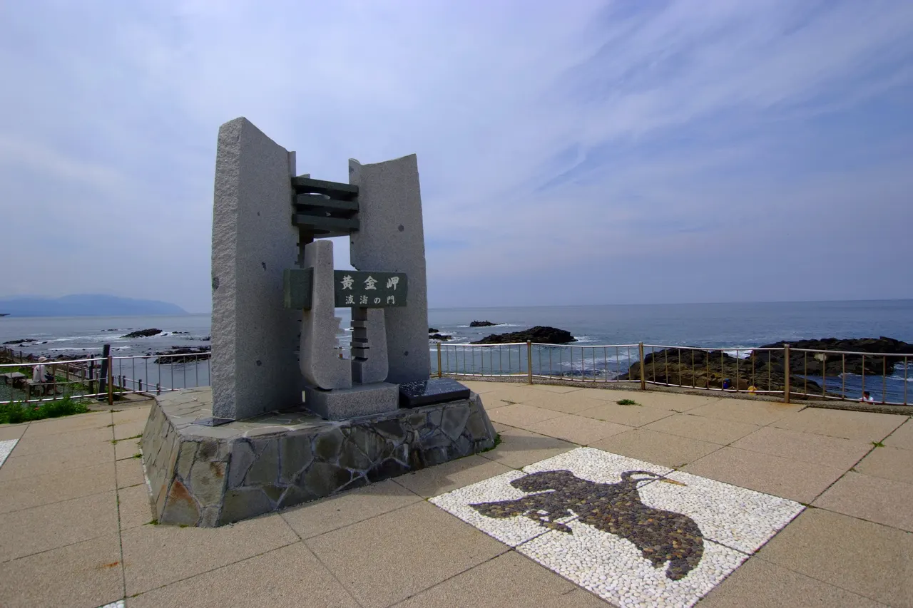
Stay
ホテルニューホワイトハウス
Hoterunyuuhowaitohausu
HOTEL NORTH・i（ホテルノースアイ）
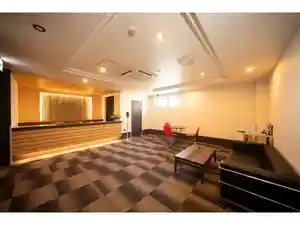
Hotel North I ( Hoterunoosuai )
レジデンスホテルGOBIN
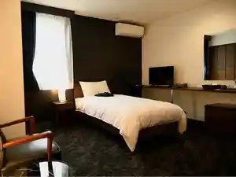
Rejidensuhoteru Gobin
ホテル神居岩
Hoteru Kamii Iwa
Dining
大衆酒場 煉
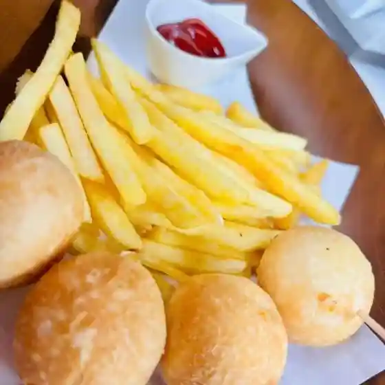
Taishuu Sakaba Ren
むさし家
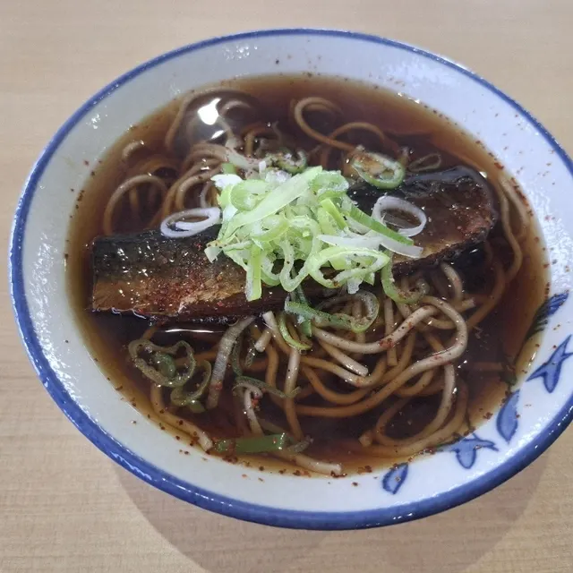
Musashi Ie
ヤマニ野口水産
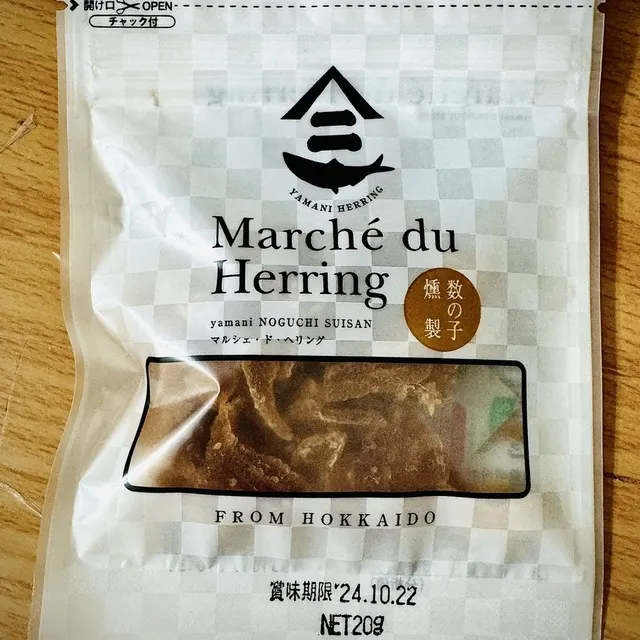
Yamani Noguchi Suisan
フタバ製麺
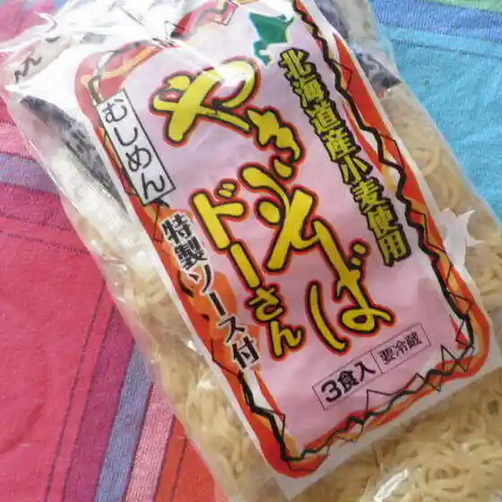
Futaba Seimen
竹寿司
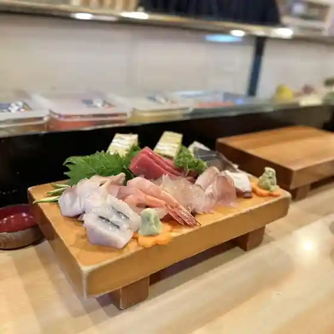
Take Sushi
オーディナリー・ファーム
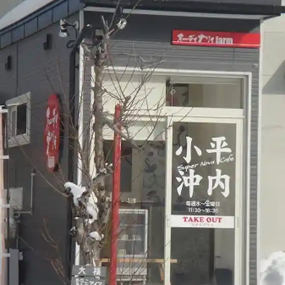
Oodinarii Faamu
田吾作
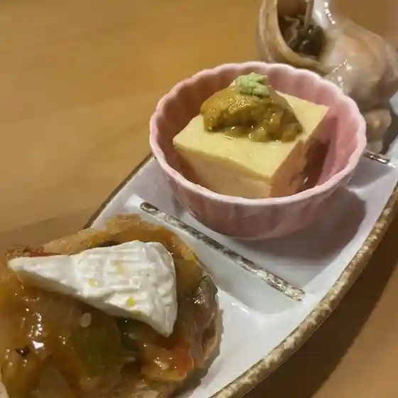
Tagosaku
HERMOST
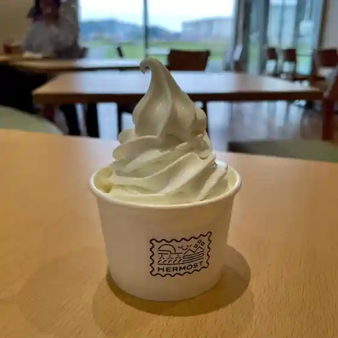
Hermost
壺屋 生協るもい店
Tsuboya Seikyou Rumoi Mise
セブンイレブン 留萌開運町店
Sefu N'Irefu N Rumoi Kaiun Machi Mise
Love Vegetable Tanaka
Love Vegetable Tanaka
まごころ屋
Magokoro Ya
浜本商店
Hamamoto Shouten
美食酒家 司
Bishoku Shuka Tsukasa
もつのだるま 留萌店
Motsunodaruma Rumoi Mise
井原水産
Ihara Suisan
大扇
Dai Ougi
駅前 海栄らーめん
Ekimae Umi Sakae Raamen
宿カフェほろぬか
Yado Kafe Horonuka
LAWSON 留萌千鳥町店
Lawson Rumoi Chidorichou Mise
麺や 雅 留萌店
Men Ya Masa Rumoi Mise
漁師の店 富丸
Ryoushi No Mise Tomi Maru
友禅
Yuuzen
北海道良水 道の駅店
Hokkaidou Yoshimi Michi No Eki Mise